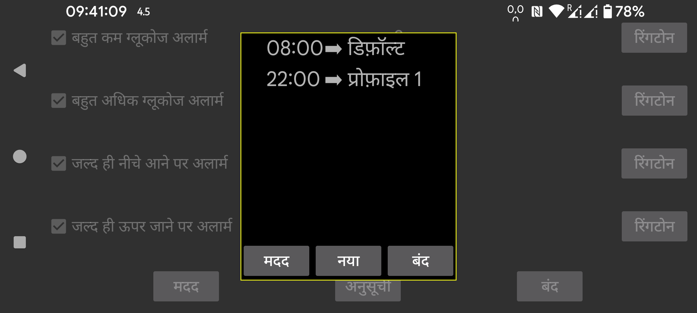
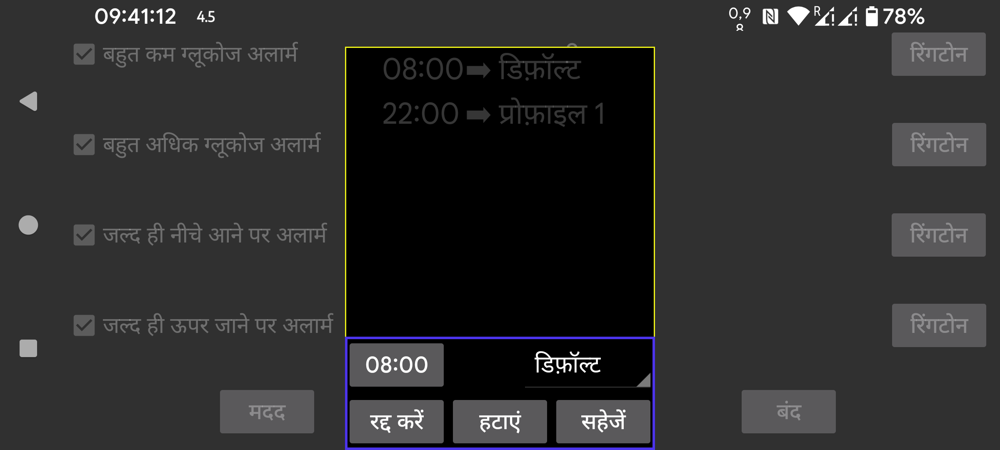

ar de es hi it ja ko nl ru uk uz en
प्रोफ़ाइल को एक निश्चित समय पर सक्रिय करने के लिए अनुसूचित करें। एक निश्चित समय और एक प्रोफ़ाइल के बीच संबंध बनाने के लिए “नया” दबाएं। Juggluco निर्दिष्ट समय पर हर दिन उस प्रोफ़ाइल पर स्विच करेगा। आप एक समय प्रोफ़ाइल संबंध को छूकर संपादित कर सकते हैं।
अलार्म और बोलें के लिए सभी सेटिंग्स एक साझा प्रोफ़ाइल के लिए विशिष्ट हैं। कौन सी सक्रिय है यह बायां मेन्यू → सेटिंग्स → अलार्म और बायां मध्य मेन्यू → बोलें के तहत दिखाया जाता है। प्रारंभ में प्रोफ़ाइल “डिफ़ॉल्ट” होती है, आप इसे “प्रोफ़ाइल 1" या “प्रोफ़ाइल 2" आदि में बदल सकते हैं। जो आप अलार्म और बोलें में निर्दिष्ट करते हैं वह सक्रिय प्रोफ़ाइल के लिए विशिष्ट होता है।
कुछ उपयोगकर्ताओं ने लिखा कि उन्हें लगता है कि आप केवल एक प्रोफ़ाइल पर स्विच करने का अनुसूचन कर सकते हैं और इसे समाप्त नहीं कर सकते। लेकिन आप बस एक और आइटम जोड़ सकते हैं जो डिफ़ॉल्ट प्रोफ़ाइल पर स्विच करने का अनुसूचन करता है, जिसका वही प्रभाव होता है जो एक अंत समय जोड़ने का होता।